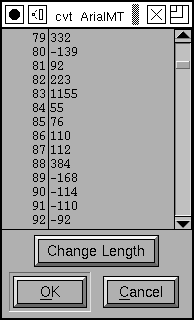

|
Viewing and Editing truetype instructions in FontForge.
- Apple's overview on instructing glyphs
- Apple's list of truetype instructions
- Apple's description of the truetype graphics state
- Apple's summary of truetype instructions
I shall not attempt to describe the mechanics of instructing truetype, if you want to understand it I refer you to the above links. (Microsoft has a similar set in but they are in word format).
This dialog shows the instructions associated with a glyph or truetype table (like fpgm or prep). If you move your mouse cursor over one of the instructions a brief help message will pop up describing that instruction. If you press the [Edit] button the dlg will change and you will be presented with a editable textarea containing the same instructions. You may modify these to your heart's content. Pressing the [Parse] will parse your modifications and (if they parse) return you to the "help" mode.
Instructions like MIRP may be entered either in FontForge's peculiar (but
marginally more mnemonic) style: MIRP[rnd,white] or as
MIRP[00110], and PUSHB_1 may be
PUSHB[000].
You may also include an stack arguments on the same line as the instruction and FontForge will convert them into the appropriate pushes. So...
5 SRP0
is equivalent to
PUSHB_1 5 SRP0
You may also use the expression cvt(<val>) instead of
a number. This will be replaced by the index in the 'cvt ' table of an entry
which is (within one em-unit of) <val>. So cvt(100) would
return the index in 'cvt ' of 100. If there is no such entry, FontForge will
create one.
When editing DELTA* instructions you might want to use the syntax:
PUSHB_3 6@12 8 1 DELTAP2
This means: Move point 8 by six delta-steps at 37 ppem (that's not clear at first glance - assuming delta_base is 9, DELTAP2 works from 25 ppem to 25+15 ppem, in this example it's 25+12 ppem). So it's just a way of constructing an argument byte for DELTAP/C.
Editing the 'cvt ' table directly
This dialog shows the initial contents of the 'cvt ' table (before it has been modified by the 'prep' program). It is simply a list of signed 16bit values. You may change any value by clicking on it and typing a new value. You may add new entries (at the end) with the [change length] button.
(You may also use the "cvt(<val>)" notation described
above to edit the cvt table.)